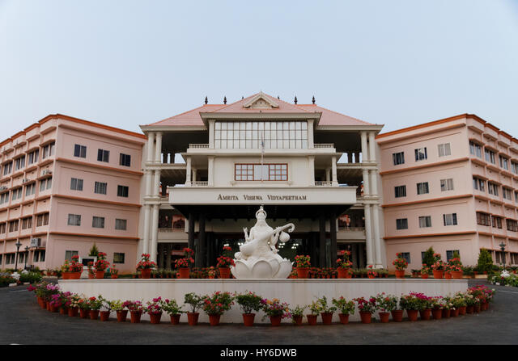

About Me
I have a passion for DevOps and Cloud technologies. I have a degree in Computer Science and have worked on several exciting projects from developemnt to deployment.
Education
-
Masters in Computer Science - Univeristy of North Carolina at Charlotte, CGPA - 4.00
- Bachelors in Technology - Amrita Vishwa Vidyapeetham, CGPA - 8.64

Experiecne
-
Graduate Teaching Assistant - Univeristy of North Carolina at Charlotte (August 2023 - December 2023)
-
Supported the academic growth of 108 undergraduate students majoring in Computer Science by conducting office hours in an online and offline mode.
-
Assessed and graded assignment submissions and projects, providing constructive feedback to students to foster their learning progress.
-
Offered personalized academic advising during office hours, guiding students to overcome challenges and excel in their coursework.
Site Relaibility Engineer - II - AppViewX (August 2021 - August 2022)
-
Developed an automation script using shell language that deploys the Kubernetes environment and configures it by reducing the processing time significantly by 97.5% (from 2 hours to 3 minutes).
-
Performed Fixed Patching, Hot fix patching, and configured the environments by maintaining 99.5% uptime.
-
Configured a monitoring software by using Loki, Grafana, Prometheus, and Promtail for log aggregation and analysis which resulted in a 50% reduction in time required for troubleshooting and root cause analysis.
-
Proficiently solved the customer tickets and pain points of customers by maintaining an NPS score of 100. Used JIRA and SALESFORCE to track the progress of the tickets.
-
Deployed Kubernetes environments for 7 production and 15 POC SaaS customers using AWS services and monitoring services.
-
Responsible for writing internal KB articles about the troubleshooting procedure for escalated cases.
Solution Support Engineer-Intern - AppViewX (February 2021 - July 2021)
-
Worked on Security and Certificate Life Cycle Management, F5 devices and firewalls.
-
Have hands-on experience with multiple technologies like Kubernetes, MongoDB, F5.
-
Proficiently solved the pai problems of the customers, maintained an NPS score of 100.
Projects
-
Analyzing and Ranking the Resumes/CVs using NLP techniques
- A user-friendly web application for making the hiring process easy and efficient by parsing and analyzing the candidate’s resume and helps in finding potential candidates for companies according to their requirements.
- This application can significantly reduce the processing time for hiring by 50% and provide results with an accuracy of 95%
Enterprise Management System
-
An interactive dynamic web application built on a real-life scenario that makes the work of an Entrepreneur and accountant easy and efficient while dealing with the taxes of an enterprise.
-
Provides the taxes and results with an accuracy of 100%, reduces the workload of accountants and enterprises by 80%.
Microblog
-
An interactive friendly dynamic web application developed using Flask as a framework. This project is more of a forum and less of a blog. Developed while learning Flask.
My Index